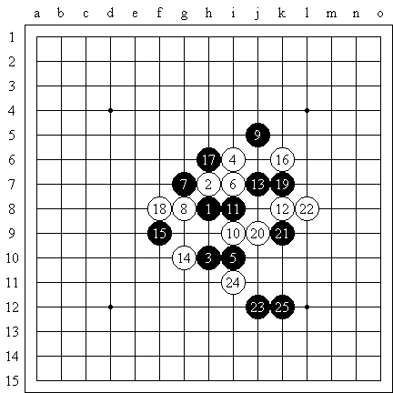

明教第一届名人杯慢棋赛 木月对少少
#1 明教第一届名人杯慢棋赛 木月对少少 作者：江南新绿 发表时间：2007-8-4 23:49:14
此局木月持黑，少少持白，瑞星开局，白棋12白棋首先变着，13单挡也是最强，14防守常见变化，15防守稳健，16双二普通，17防守意图上下连接，实战少少18手白棋也很稳健的防守了一步，但在世青赛上ando持白18手走在16和12之间活三的激烈变化，19，20双方也是相互防守，眼看对局要在相互防守中结束了。突然的21手，如地火在涌动，如岩浆在翻滚，无穷的热力从地底下迸发出来，木月很快将要显示其力量了，不由的令人相起第三届浙江慢棋的暂列第一的tear，同样的开局，同样的进程，是否会有相同的结果呢，令人期待中。。。
可以参考对局如下：

第三届浙江慢棋赛上的有一盘刚刚结束的tear对lllland的一盘是这样的，前19手完全相同，20阻挡黑棋向下拓展，21防守的理想位置，22没有突出的防守位置，简单的切断，23，25看似平常的做棋之后，却蕴涵着精妙的进攻手段，白棋26只有投子认输了。